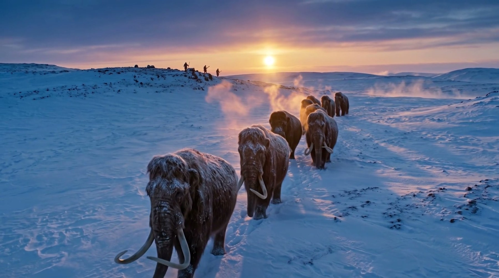
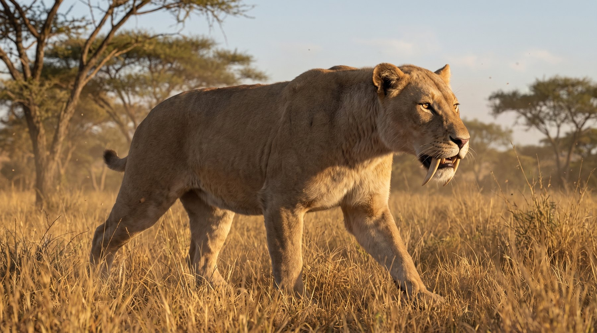
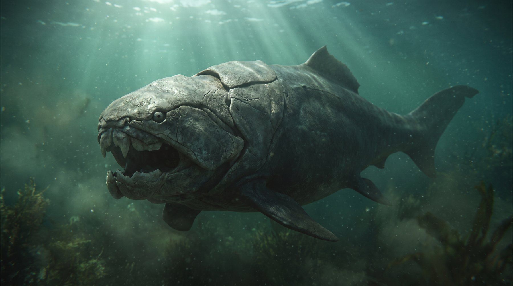
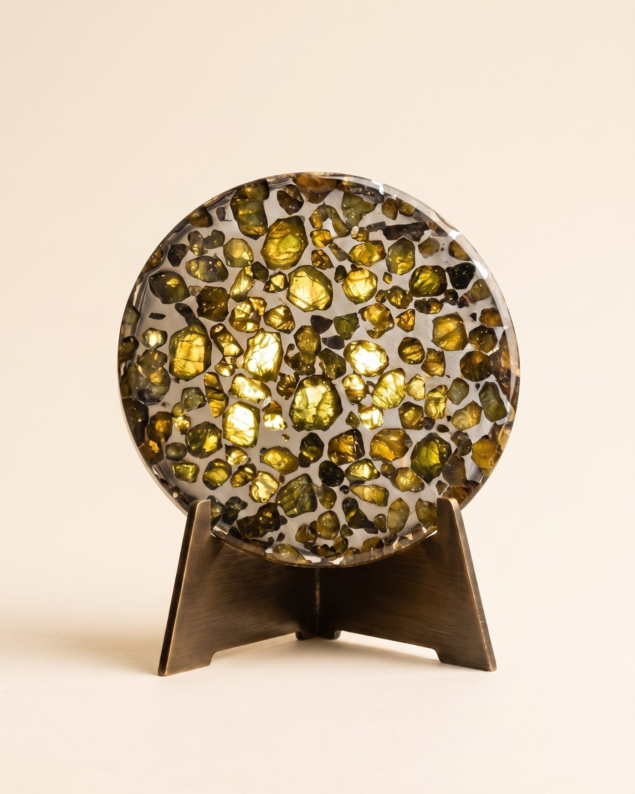

Они были
живыми
Каждый объект дома когда-то дышал, плавал или падал с неба. Пролистайте вниз — и увидьте миры, из которых они пришли. Насколько это возможно — как в жизни.
Листайте · эры оживают

Каждый объект дома когда-то дышал, плавал или падал с неба. Пролистайте вниз — и увидьте миры, из которых они пришли. Насколько это возможно — как в жизни.
Стадо идёт сквозь мороз к низкому солнцу. На гребне — охотники: люди уже здесь, и уже смотрят. Через двадцать пять тысяч лет от этого вечера останется бивень.
 Войти в эру →Плейстоцен · обитатели и объекты
Войти в эру →Плейстоцен · обитатели и объекты
Леса отступают, открывается трава — и по ней идут кошки с саблями вместо клыков. В море в это же время правит акула длиной с автобус.

Войти в эру →Неоген · обитатели и объектыТрицератопсы пасутся в золотом свету, тираннозавр ждёт в дымке. Обычный вечер мелового периода — за мгновение до конца эпохи.
 Войти в эру →Меловой · обитатели и объекты
Войти в эру →Меловой · обитатели и объекты
Спиральные раковины дрейфуют в столбах света, выше скользит ихтиозавр. Каждая спираль считает золотое сечение — просто живя.
 Что осталосьАммонит Arietites · R–0211
Что осталосьАммонит Arietites · R–0211
Трилобиты ползут между качающихся морских лилий, а над ними в мутной воде идёт охота: девон — век рыб, когда жизнь изобрела броню и челюсть.

Войти в эру →Девон · обитатели и объектыТолько строматолиты — купола первых бактерий — и огромная близкая Луна в зеркале воды. Тишина, которая длилась дольше, чем вся остальная история жизни.
 Что осталосьМинералы Земли · Terra
Что осталосьМинералы Земли · Terra
Океан магмы, чёрные острова остывающей коры, метеоры в дымном небе. Отсюда — вещество палласитов: гости из этого времени всё ещё падают к нам.

Что осталосьПалласит Сеймчан · R–0101Свидетели каждого из этих миров — в каталоге дома: атрибутированные, оправленные, с паспортом происхождения.